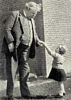

A modo de muestra, y a tono con este fin de Adviento:
El nacimiento de Jesús, según Ana Catalina Emmerich
(Advertencia preliminar: Las 'visiones' de Ana Catalina
no tienen ninguna "autoridad". En principio, deben ser leídas
como literatura piadosa, sin plantearse demasiado la cuestión de
su veracidad histórica; como tampoco no preocupa
la cuestión al ver el Cristo de Velazquez o cualquier
representación del evangelio.
Y como dice acá, hay cosas "difícilmente aceptables por la crítica moderna".
Dicho esto, hay que convenir en que son una cosa muy
especial, con un toque 'plástico' único, con una seguridad
en el 'pincel', un grado de detalle y verosimilitud 'artística'
que resulta algo perturbador...
Otro día seguimos.
)
- ...
Hoy a mediodía María y José se pusieron en camino para Belén, de donde se hallaban a unas tres leguas aún. La dueña de la casa les aconsejó que se quedaran, pareciéndole que María podía dar a luz de un momento a otro. La Virgen respondió, después de haber bajado su velo, que debía esperar treinta y seis horas todavía (no sé bien si no dijo treinta y ocho). Aquella mujer los habría seguido alojando con gusto, pero no en su casa, sino en otro edificio.
En el momento de la partida, vi a José que hablaba de sus asnos con el dueño; hizo el elogio de estos anímales, y dijo que había traído, la burra para empeñarla en caso de necesidad.
Habiendo hablado los huéspedes de la dificultad de encontrar un alojamiento en Belén, José dijo que tenía allí varios amigos y que estaba seguro de ser bien recibido. Siempre me apenaba el oírle hablar con tanta seguridad, de la buena acogida que esperaba. Todavía habló de esto con María en el camino. Vemos pues, que hasta santos tan grandes pueden equivocarse.
BELÉN. LLEGADA DE LA SAGRADA FAMILIA
Dieron un rodeo al Norte de la ciudad, acercándose por el lado del Poniente. Se detuvieron bajo un árbol a la vera del camino, y María bajó del asno y aseó su vestido. Entonces José se dirigió con ella hacía un gran edificio, rodeado de otras construcciones más pequeñas y de patios, que se hallaba a algunos minutos de Belén. También había allí algunos árboles, y muchas personas habían levantado sus carpas en los alrededores. Esta era la antigua casa de la familia de David, que había sido propiedad del padre de José. En ella habitaban todavía unos parientes o relaciones, pero éstos lo trataron como extranjero y no quisieron reconocerlo. En esa casa se recibían entonces los impuestos para el gobierno romano. José, acompañado de la Santísima Virgen y llevando el asno por el cabestro, se dirigió allí, pues todos los que llegaban debían darse a conocer, y allí recibían el permiso sin el cual no podían entrar a Belén...
(La Hermana dijo después, con algunos silencios entre sus palabras:)
La borriquilla no está junto a ellos; va corriendo
alrededor de la ciudad, hacía el Mediodía; hay allí un
pequeño valle. José entró en el gran edificio. María se
encuentra en una casa pequeña que da al patio, con unas
mujeres. Éstas son bastante benévolas con ella y le dan de
comer... Esas mujeres cocinan para los soldados... Son
soldados romanos ; tienen correas que cuelgan alrededor de
la cintura...
La temperatura es aquí agradable y nada fría; el
sol se muestra por encima de la montaña que está entre
Jerusalén y Betania. Desde aquí se puede admirar un
paisaje bellísimo.
José se halla en una gran habitación que
no está en el piso bajo; le preguntan quién es, y consultan
grandes rollos, algunos de los cuales están suspendidos de los
muros; los despliegan, y en ellos leen su genealogía y también
la de María. José no parecía saber que también Ella, por
Joaquín, descendía en línea directa de David...
Cuando estuvo
arreglado lo que concernía a José, se hizo venir también a la
Virgen ante los escribas, pero no le pidieron
papeles. Dijeron a José que no era necesario que trajera su
mujer con él, y le dijeron algunas bromas a causa de la
juventud de María, dejándolo confuso.
JOSÉ BUSCA ALOJAMIENTO INÚTILMENTE. VAN A LA GRUTA DEL PESEBRE.
Entraron entonces en Belén, cuyas casas están separadas unas de otras por intervalos bastante largos. Se entraba a través de escombros y como por una puerta derruida.
María se quedó junto al asno al principio de la calle, y
José buscó inútilmente un alojamiento en las primeras casas, pues
había muchos extranjeros en Belén y se veía muchas personas
corriendo de un lado para otro. Volvió José junto a María y le
dijo que allí no era posible encontrar posada, y que era necesario
penetrar más en la ciudad. Condujo al asno por el cabestro,
mientras la Santísima Virgen caminaba a su lado.
Cuando llegaron a la entrada de otra calle, María quedó de nuevo junto al
asno, mientras José iba de casa en casa, sin poder hallar una en la
que quisieran recibirlos. Pronto volvió lleno de tristeza.
Esto se
repitió varias veces, y con frecuencia la Santísima Virgen tuvo que
esperar largo tiempo. En todas partes el sitio estaba ocupado,
en todas partes se le rechazó y finalmente tuvo que decir a
María que era necesario ir a otra parte de Belén, en la cual
hallaría sin duda lo que buscaba.
Volvieron entonces sobre sus pasos, en dirección contraria a la que habían tomado al venir, y luego dieron vuelta hacia el sur. Siguieron una calle que parecía más bien un camino en la campiña, pues las casas se hallaban aisladas y sobre pequeñas alturas. Allí también todas las tentativas fueron inútiles .
Una vez llegados al otro lado de Belén, donde las casas se
hallaban aún más dispersas, encontraron un gran espacio vacío,
que era como un campo desierto en la ciudad. En él había una
especie de cobertizo, y a poca distancia estaba un árbol grande,
bastante parecido a un tilo, cuyo tronco era liso, y cuyas ramas
se extendían a lo lejos y formaban como un techo alrededor de él.
José condujo a la Santísima Virgen allí; con algunos bultos le
arregló un asiento cómodo al pie del tronco, para que pudiera
descansar mientras él buscaba todavía un alojamiento en las casas
vecinas. El asno quedó con la cabeza mirando al árbol.
María al principio se mantuvo de pie, apoyada contra el tronco.
Su vestido de lana blanca no tenía cinturón y caía en pliegues.
Su cabeza estaba cubierta por un velo blanco. Varias personas
pasaron y la miraron, sin saber que su Salvador se hallaba tan cerca
de ellos.
¡ Qué paciente, qué humilde y qué resignada era María!
Tuvo que esperar todavía mucho tiempo y al fin se sentó sobre las
colchas con las manos juntas sobre el pecho y la cabeza baja.
José volvió lleno de tristeza, pues no había podido encontrar
alojamiento. Los amigos de los cuales había hablado a la Santísima
Virgen apenas querían reconocerlo. Lloraba, y María lo consoló.
Fue una vez más de casa en casa, y queriendo hacer más eficaz su
solicitud, hablaba del estado de su mujer, lo que, por el contrario,
contribuía a que le fuera negada la hospitalidad.
El lugar era solitario; pero algunas personas se habían detenido y miraban de lejos con curiosidad, como se hace de ordinario cuando se ve a alguien que se queda durante largo tiempo, en el mismo sitio a la caída de la tarde. Creo que algunas de estas personas dirigieron la palabra a María y le preguntaron quién era.
Por fin volvió José. Estaba tan avergonzado, que apenas se atrevía a acercarse a la Virgen. Le dijo que todo era inútil; pero que él conocía un sitio fuera de la ciudad donde los pastores se reunían a menudo cuando venían a Belén con sus rebaños, y que en aquel sitio podrían encontrar por lo menos un refugio. Él conocía aquel lugar desde su juventud; cuando sus hermanos lo atormentaban se retiraba allí frecuentemente para rezar fuera del alcance de sus persecuciones. Decía que si los pastores volvían, se arreglaría fácilmente con ellos; pero que por otra parte, venían raramente en esa época del año, y agregaba que cuando Ella estuviera tranquila en aquel lugar él volvería a salir en busca de un alojamiento mejor.
Salieron, pues, de Belén por el lado oriental, siguiendo un sendero desierto que torcía a la izquierda. Este era un camino semejante al que podríamos seguir si anduviéramos a lo largo de los muros desmoronados de los fosos, o de las fortificaciones derruidas de una pequeña ciudad; subía un poco al principio, luego descendía la ladera de un montículo, y los condujo a algunos minutos al Este de Belén, delante del sitio que buscaban, cerca de una colina o de una vieja muralla delante de la cual se hallaban algunos árboles. Estos eran unos árboles verdes, terebintos, o cedros, y otros que tenían pequeñas hojas como las del boj...
DESCRIPCIÓN DE LA GRUTA DEL PESEBRE Y DE SUS ALREDEDORES
En la extremidad meridional de la colina, alrededor de la cual daba vuelta el camino que conducía al valle de los pastores, se encontraba, además de varias otras abiertas en la roca, la gruta en la que José buscó un refugio para la Virgen. La entrada que miraba hacia Poniente, conducía por un estrecho pasaje a una especie de habitación, redondeada por un lado, triangular por el otro, situada en la parte oriental de la colina. La gruta había sido abierta en la roca por la naturaleza; pero del lado del Mediodía, donde pasaba el camino que conducía al valle de los pastores, se habían hecho algunas reparaciones por medio de un tosco trabajo de mampostería. Por este lado, que miraba hacia el Mediodía, había otra entrada, pero se hallaba generalmente tapada; José la volvió a abrir para su uso. Saliendo por allí, y hacia la mano izquierda, se encontraba una abertura más ancha que conducía a una cueva estrecha e incómoda, colocada a mayor profundidad, que iba a dar debajo de la gruta del Pesebre. La entrada habitual de la gruta del Pesebre miraba hacia Poniente. Desde allí podían verse los techos de algunas casas de Belén. Saliendo y dando vuelta a la derecha, se llegaba a la entrada de una gruta más profunda y más oscura, en la cual se escondió una vez la Santísima Virgen. Delante de la entrada abierta al Poniente, había un techo de junco apoyado sobre unas estacas que, extendiéndose hacia el Mediodía, cubría también la entrada que se, hallaba de ese lado, de manera que se podía, estar a la sombra delante de la gruta. En su parte meridional, la gruta tenía len a parte alta tres aberturas enrejadas por donde entraban el aire y la luz; una abertura semejante se encontraba en la bóveda de la roca. Estaba cubierta de césped y formaba la extremidad de la altura sobre la cual estaba situada Belén.
LA SAGRADA FAMILIA ENTRA EN LA GRUTA DEL PESEBRE
Era ya tarde cuando llegaron a la entrada de la gruta.
La borriquilla, que desde la entrada de ellos en la casa paterna de
José había corrido de un lado a otro alrededor de la ciudad,
se acercó y se puso a saltar alegremente.
Viendo esto, la Santísima Virgen dijo a
José:
- "Mira, es seguramente la voluntad de Dios, que
entremos aquí".
José condujo al asno bajo el alero que estaba delante de la boca de la gruta; preparó un asiento para la Santísima Virgen, que se sentó mientras él buscaba alguna luz y penetraba en la cueva.
(continuará...)
Todo el asunto (comentado en estos días en el weblog de Amy) es bastante extraño ... (bizarro, se dice ahora...).
Resulta que...
Como cualquiera sabe (y el que no lo sepa, ahora lo está sabiendo)
Mel Gibson , el actor y director, es católico.
Más: es "muy católico" (qué expresión
ridícula... pero cualquiera entiende lo que eso quiere decir...
digamos con más precisión: católico 'devoto').
Más: (o menos?): es del palo "tradicionalista"...
(hace falta que explique qué es eso ? supongo que no... otro
día veremos... hablando mal y pronto: son los 'de derecha',
tendencias a la liturgia vieja -misa en latín- y al fundamentalismo
doctrinal; lejos de los progresistas, más o menos cerca
del 'lefebvrismo, etc...).
Esto es moderadamente raro, en el ambiente de Hollywood (y en el actor
de Mad Max, Arma Mortal, etc).
Pero el tema es que el tipo ahora está dirigiendo una nueva película
(la anterior había sido "Corazón valiente"); se comentaba
al principio que él mismo sería protagonista, pero luego
resultó que no: el elegido fue Jim Caviezel... que también
es "muy católico".
Y de qué trata la película? De las últimas doce horas de vida
de Jesús (bueno... mejor dicho: de las doce horas anteriores
a su muerte). En esta
nota el actor cuenta los pormenores -y la tortura- de la filmación, a terminar dentro de poco.
Y el detalle más bizarro: aparentemente,
la película será hablada en los lenguajes
"originales" (arameo, hebreo, latín, griego)...
y sin subtítulos !!!
Esto habría puesto los pelos de punta a las distribuidoras
de cine, y por ahora ninguna quiso agarrar viaje.
Pero Mel Gibson está emperrado (parece que esta es
"su película"), y dice que no le importa perder plata....
Claro está que, conociendo un poco del mundo publicitario,
todo esto uno lo toma con el granito de sal... Igual, es
interesante.
Y una rareza adicional, muy significativa para mí (y para casi
nadie): buena parte del guión estaría basado en las
"Visiones de Ana Catalina Emmerich". Siendo como soy un admirador
entusiasta (y muy solitario) de Ana Catalina, esto
de verdad me impresiona....
Y quién cornos es Ana Catalina Emmerich ? Eso, en el siguiente
post.
Más información sobre la película
acá,
acá,
acá
y (en español)acá
y
acá. Pics.
Me entero además de que se filma en el mismo lugar donde
filmó Pasolini su "Evangelio según San Mateo".
Y también encuentro ahí un link al libro (en realidad, una selección)
de Ana Catalina (en inglés!) :
The Dolorous Passion of Our Lord Jesus Christ
De un tiempo a esta parte -y salvo contadas excepciones con nombre y apellido-, cada vez que los diarios publican una entrevista a algún obispo argentino, el contenido de lo que se dice no difiere mucho de lo que uno espera oír de boca de un "opinólogo" cualquiera. Que si el FMI esto, que los "planes de ayuda social" lo otro, que las autoridades aquello...; alguna mención a Dios en general si hay suerte y a otra cosa.
Quizá sean sólo ideas mías, pero me preocuparía que los maestros de la fe hablen tanto del "mundo" -por más problemas que haya (y los hay) y tan poco de las cosas de Dios, sobre todo en Adviento. Al menos -me parece- si resulta necesario hablar de los problemas del país, nos vendría bien a todos una perspectiva más "sobrenatural" de las cosas por parte de nuestros obispos. Digo yo, con todo respeto...
-
“La Iglesia ha previsto excelentemente que en este tiempo se repitan las palabras y se renueven los deseos de los que precedieron a la primera venida del Señor. Y no recordamos tales deseos un solo día sino por más tiempo, porque suele ocurrirnos que lo que mucho deseamos, si se lo difiere un tanto, cuando llegue aquello que se ama nos parecerá más dulce.
A nosotros toca, por consiguiente, queridos hermanos, seguir los ejemplos de los santos padres, recoger sus aspiraciones y, así, encender nuestro espíritu en el amor y deseo de Cristo. Debéis saber que, por esta causa, se ha determinado celebrar este tiempo, a fin de que atendamos al deseo que tuvieron nuestros santos padres de la primera venida del Señor y, por su ejemplo, aprendamos a esperar con ardiente anhelo su segunda venida”.
(San Elredo de Rieval, Sermón sobre el Adviento del Señor)
-
Todo el gigantesco materialismo que domina la mente moderna
se apoya sobre un falso supuesto:
que si una cosa se repite a sí misma, está muerta,
como un mecanismo de reloj.
....
El sol sale todas las mañanas.
Yo, en cambio, no puedo decir que me levanto todas las mañanas ...
pero mi variación se debe más a mi debilidad que a mi actividad.
Para decirlo con sencillez:
es posible que el sol salga todas las mañanas porque no se cansa de salir;
su rutina puede provenir no de escasez de vida, sino de superabundancia.
Eso puede verse bien en los niños,
cuando dan con algún juego que les gusta. 
Porque a los niños les sobra la vida,
porque sus ánimos son libres y audaces,
y por eso necesitan repetir siempre los mismos actos.
Y gritan "Otra vez, otra vez!",
y las personas mayores tienen que seguir una y otra vez,
hasta que mueren de cansancio.
Porque las personas mayores no son bastante fuertes
para regocijarse con la monotonía.
Pero pareciera que Dios sí lo fuera.
Tal vez Dios vuelva a decirle al sol todas las mañanas
"Otra vez, otra vez!",
y a la luna todas las noches: "Otra vez!"
Porque nosotros hemos pecado y hemos envejecido,
pero nuestro Padre es mucho más joven que nosotros ... (more...)
G. K. Chesterton - Ortodoxia
Mi preferida de entre las remeras geek (sólo para iniciados ... en Unix).
-
"Cristo importa pero no exporta."
Trataré de comentar algo mañana (no quiero perderme la tormenta que se está largando). El lector sagaz puede, mientras tanto, ir tratando de adivinar el sentido de la frase de San Alberto (ayuda: el Marial trata de la Virgen María, de sus prerrogativas, sus títulos, etc)
PS :
El sentido lo vislumbrará cualquiera que sepa del título
de María como Coeli Porta ("Puerta del Cielo"),
y se le ocurra conectar eso con "im-porta, ex-porta".
La frase la tira Alberto tratando la cuestión de "si el título
de Puerta del Cielo le conviene propiamente a María",
y contestando a la objeción "Cristo dijo que El es
la puerta (así como es el camino); nadie va al Padre
si no es por El; ergo, más propio sería decir que
Cristo es Puerta del Cielo, que María".
Si sólo se tratara esa ' dirección', sí, dice el
maestro de Santo Tomás; pero:
Cristo importa pero no exporta. Una puerta
da paso en las dos direcciones; para adentro y para
afuera. A María le corresponde así mejor
el hecho de ser nuesta puerta, por las dos direcciones:
porque por Ella (por su intercesión) nos 'bajan las gracias'.
Curioso. La verdad, yo siempre había pensado en el título
Coeli Porta aplicado a la otra dirección (im-porta)
solamente. Parecida metáfora , también apuntando
a María como mediadora de las gracias,
es la del acueducto, de un famoso sermón de San Bernardo.
Yo no entiendo... por qué, si La Nación tiene bastante bien cubierto el rubro humor con Nik y Maitena, a la hora de hacer crítica de espectáculos se salen con cosas como ésta:
-
Charly García presentó su anunciada despedida
[... ] otro rapto de ironía [...]
para seguir alimentando su alter (?) ego
[...] sensible tono irónico [...]
lo que sobresale a lo largo de las dos horas de show
no son sólo sus juegos de palabras
[...]
También en esa luz que lo ilumina (??) para dejar estampadas (??)
frases memorables (!!) como: [... ... ...]
ese puñado de canciones que todos quieren cantar. [...]
El chip de la memoria se enciende cuando un García a bordo de sus teclados transporta al público por sus distintas épocas.
Canciones que reavivan la memoria colectiva [...] El momento más potente en imágenes, música y lucidez escénica (!) [...] resumiendo una etapa de la Argentina que se vuelve a repetir como un círculo vicioso [...] La eléctrica versión con el rosarino y el bigote bicolor cruzando frases y sonidos al mango [...] hay lugar para que la gente festeje cada ocurrencia del músico [...] entre lo genial y lo absurdo [...] la adrenalínica versión [...] cuando García suelta su genio sobre el piano que le permite estimular su ego [...] la música se deja llevar (??) por esas melodías directas que forman parte del inconsciente colectivo de varias generaciones [...] Sus letras siguen calando [...] 30 años de historia argentina que logró traducir en canciones que mantienen absoluta vigencia [...] Frescos de un viejo país en extinción que comienza a inventarse en el día a día "ruina sobre ruina"...
Y, ya que estamos, esta otra perla del susodicho matutino:
Se trata del pai umbanda (" un hombre alto, de anteojos, aspecto desaliñado, semicalvo y con una colita recogiendo sus cabellos...") acusado de haber descuartizado a una mujer hace poco:
-
... se presentó ante el juzgado ... una supuesta hermana del pai.
La mujer habría confesado tener una mala relación con su hermano,
que, según reveló, "enloqueció" después de la muerte de la madre de ambos, pues tenía "un gran complejo de Edipo".
Clarín comenta en su edición de hoy la próxima publicación del "Diccionario de la familia y la vida" por parte del Pontificio Consejo para la Familia y nos enseña que "son muchos los que hoy creen que precisamente en materia de moral sexual es donde el próximo Papa tendrá más problemas de actualización de la doctrina católica".
¿"Muchos"? ¿Muchos qué o quienes? ("Los de siempre", me dice una vocecita misteriosa).
Y, también, ya se sabe: los católicos no estamos actualizados, "Humanae Vitae" es del '68...
Nota para los "muchos" de Clarín que vienen al rescate: esperen sentados.
La ocasión recuerda al cuento del cura que le pregunta al andaluz:
-¿Cuánto hace que note confiesas?
-Die' años, pare.
-¡Diez años! ¿No crees en Dios? ¿No le temes?
- Cree' creo, pero he oío el runrún de que lo iban a quitá...
Mirando librerías de usados, en el microcentro de Buenos Aires. No compré nada, pero van algunas cositas para el que le interese:
Más accesible, ($5) un número de la revista Crisis, 1976, con la entrevista a Castellani sobre aquel almuerzo que compartieron con Borges y Sábato, invitados por Videla.
Recibí algún que otro comentario por este post de ayer... sobre la "cita de Martín Fierro". Fue una especie de broma, algo hermética tal vez.
Por un lado, Fierro dijo eso de "los hermanos sean unidos.... " (etc) que venía más o menos bien para el caso... pero mejor venía esa famosa frase ("en lo esencial, unidad...") de atribución tan incierta como variada (San Agustín, Vicente de Lerins, Melanchton, Juan XXIII...). Y me gustó aportar un toque autóctono a la confusión...
Hernán me ha invitado a colaborar con su blog, cosa que haré con gusto y que le agradezco mucho. El post anterior fue sólo una prueba/chambonería de iletrado informático. Prometo contenidos más sustanciosos en el futuro.
Poca actividad estos días. Estoy poniendo orden en las intimidades del blog (codigo html, entre otras cosas).
Estuve metiéndome en los 'internals' del MovableType, y me hice un par de scripts para hacer un volcado (dump) de todos posts a archivos de texto (para procesarlos con perl) y para restaurarlos. Si a alguien le interesa, pregunte.
De entre la parafernalia publicitaria con motivo de la Navidad que viene: un afiche que vi hoy, dice algo así:
-
Llegan las fiestas. ¿Pensó en su hígado?
No voy a hacer alguna reflexión irónica sobre el significado de "las Fiestas" para la cultura que se refleja en esa publicidad; no es nada necesario.
Pero, pensándolo dos veces, y por esta vez, voy a adoptar el slogan para mí. Sí señor.
Es verdad, falta poco para Navidad, y me gusta la idea de cuidar el hígado (en el sentido bélico de la palabra) durante estos días, para llegar en paz a la Nochebuena.
Nada de bilis, pues, por ahora; y en lo posible-...
(Como es de imaginar, eso implica abstenerme de diarios, comments, ciertos weblogs, ciertos temas, etc...)
Un par de links de los weblogs de St Blog Parish (en inglés):
-
Gerard trae una página de Dorothy Day sobre la castidad
En Flos Carmeli,
entre otras cosas, este link con consejos sobre la confesión y la comunión frecuentes.
John y T.S. O'Rama se hacen cargo. El primero (dominico) se pregunta cuál será la posición de su orden respecto del consumo de mate (vistos los vaivenes de los jesuitas...). Yo no sé , tendré que preguntarle a un monje dominico que de vez en cuando veo... y ciertamente la cuestión "De si la ingestión de mate es hábito vicioso" parece -lamentablemente- no haber entrado en la Suma de Santo Tomás. Me imagino, de todas maneras, que el "sed contra" tácito se basaría en el siguiente hecho: ninguna orden religiosa puede sobrevivir en la Argentina si prohibe el consumo de mate.
Además, mi compatriota Laura sale con algunos comentarios despectivos hacia las facturas porteñas, y reinivindica los bizcochitos y las tortas negras de sus pagos (Entre Ríos). Bueno... es verdad que distintas regiones del interior tienen diferencias importantes, pero tampoco es cuestión de pretender imponer sus cosas como si fueran los únicos representantes de la ortodoxia panificadora argentina. Como decía Martín Fierro: "En lo lo esencial, unidad; en lo no esencial, libertad; en todo, caridad.". ... no?